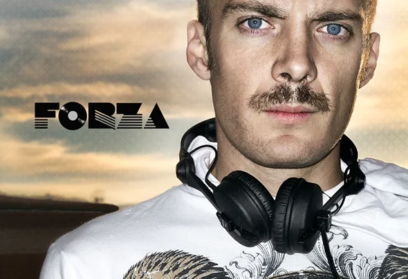

DJ Forza — dezesseis anos nas pick-ups
Do underground psicodélico à maturidade melódica do techno. O selo Tattva Music, uma discografia em três movimentos, e uma rede de colaborações transoceânica.

A vida musical
A música foi meu primeiro passaporte internacional. Como DJ Forza passei dezesseis anos dentro da cena eletrônica mexicana e latino-americana, construindo sets que iam das texturas mais psicodélicas até a energia pura do techno de pico. Toquei pelo México inteiro, percorri o Brasil de ponta a ponta, fui à Índia, Estados Unidos e Chile, dividindo line-up com festivais do tamanho do Universo Paralelo. Em 2012 fui reconhecido como o Melhor DJ de Techno no México.
Tattva Music — o selo e sua missão silenciosa
Fundei e dirigi a Tattva Music, uma gravadora que virou uma pequena casa para artistas eletrônicos mexicanos e internacionais que eu admirava. O nome sânscrito não era decorativo — era uma promessa. Tattva significa "a essência das coisas", e o selo nasceu com uma intenção específica:
"Fomentar a unidade e o entendimento mútuo entre as diferentes culturas do mundo através da música — e honrar a cultura dos povos que habitam esta terra."
Curar um selo, nesse espírito, virou um ato de hospitalidade entre continentes — construindo pontes entre vozes mexicanas, israelenses, brasileiras, japonesas, búlgaras, alemãs e britânicas, para que soassem juntas maiores do que soariam sozinhas. O cast cresceu para incluir artistas como Ben Coda, Stan Kolev, Paul Thomas, Weekend Heroes, Ben Weber e o produtor japonês Yuji Ono, com quem construímos uma ponte cultural silenciosa entre México e Japão.
Pixan — Trance from the New World
Em 2004 compilei Pixan — Trance from the New World para o selo austríaco Synergetic Records, um percurso pelo trance psicodélico e progressivo das Américas. A compilação foi muito bem recebida internacionalmente e altamente aclamada pela Mushroom Magazine em 2005 — um reconhecimento que ainda guardo com carinho, porque colocou uma voz curatorial mexicana no mapa global do trance.
Ensinar o ofício
Por anos também ensinei o que eu amava: técnica de DJ, produção musical, mixagem e masterização. Transmitir o ofício é uma das partes mais gratificantes de qualquer arte.
"Me Encanta Dios"
Minha track mais reconhecida nasceu de uma peregrinação pessoal. Sempre me apaixonei pelas filosofias da Índia; durante alguns anos vivi uma etapa mística e contemplativa que me levou de Ranchi a Rishikesh, do canto ao silêncio. Aquela viagem interior virou som, e o resultado é uma peça que muitas pessoas ainda carregam com afeto: Me Encanta Dios.
Colaborações de Elite — selos globais
Para além do lar que era a Tattva Music, meu trabalho cruzou para alguns dos nomes maiores da indústria global de música eletrônica. Tracks minhas foram licenciadas e lançadas em selos como 1605 — o lendário selo do DJ esloveno UMEK, uma das vozes mais respeitadas do techno — Outta Limits (o selo búlgaro de Stan Kolev) e Undergroove Records, entre outros. Ver meu nome nos catálogos de selos cujos lançamentos eu havia comprado e venerado quando jovem DJ foi — e segue sendo — uma honra silenciosa e imensa.
Fechei aquele capítulo musical em 2016 com gratidão e sem arrependimentos. As pick-ups estão silenciosas por enquanto — mas o ritmo nunca abandona o corpo.
Discografia — três movimentos (2004 – 2016)
A vida musical como DJ Forza se desdobrou em três movimentos distintos, cada um uma evolução deliberada da assinatura técnica e da filosofia por trás do som. Cada release listada abaixo é verificável no Beatport.
Movimento I — Clímax Psicodélico (2004 – 2007)
A era do som expansivo ao ar livre, dos bass rolling e das progressões mentais desenhadas para picos diurnos.
- «Me Encanta Dios» · 2004–2005 · Tremor Records / Synergetic Records · a track fundacional da carreira internacional.
- Pixan — Trance from the New World · 2004 · compilação de DJ Forza pela Synergetic Records · aclamada pela Mushroom Magazine em 2005.
- «Karma Strikers» + «Energy Surf» · 2006 · Sonesta Records · com Lior Lahav (Israel).
Movimento II — Transição Underground Brasileira (2008 – 2011)
Depois de me mudar para o Brasil, o BPM baixou de 140 para 125–128, e o som migrou da psicodelia para o Tech House minimalista, hipnótico e estruturalmente preciso, em direção ao Minimal Techno.
- «Supersprite» · 2008 · Sounds of Earth · o primeiro passo formal grande em direção ao novo som.
- «Bone Groove» EP · 2009 · Sounds of Earth · o núcleo do capítulo Minimal Techno.
- «Minimalia» EP · 2009 · Sounds of Earth · continuação da linguagem minimalista.
- «Me Encanta Dios (2011 Remix)» + «Terra Sul» · 2011 · Sounds of Earth · com Thiago Merli (Brasil).
Movimento III — Maturidade Tattva (2013 – 2016)
Com a fundação da Tattva Music, o foco se firmou em Melodic Techno, House Progressivo sofisticado e ritmos quebrados experimentais — produções elegantes, cinematográficas e de alta fidelidade.
- «Dia Cero» · 2013 · Tattva Music · a track inaugural que definiu a linguagem madura do selo.
- «Far East (Forza Remix)» + «Tonight You Are Mine (Forza Remix)» · 2014–2015 · Tattva Music · remixes para Yuji Ono.
- «Disco Duro» · 2016 · Outta Limits (o selo de Stan Kolev, Bulgária) · a track de encerramento do capítulo musical ativo — uma homenagem robótica, industrial e matematicamente dançante ao capítulo de engenharia que mal começava.
"Não uso presets. Programo meus próprios osciladores."
A rede internacional
- 🇲🇽 México — Vazik (Sounds of Earth, 2008–2011), Odiseo (projeto 2up).
- 🇮🇱 Israel — Lior Lahav (Karma Strikers, Energy Surf, 2006).
- 🇧🇷 Brasil — Thiago Merli (Terra Sul, Me Encanta Dios Remix, 2011).
- 🇯🇵 Japão — Yuji Ono (remixes Far East + Tonight You Are Mine, 2014–2015).
- 🇧🇬 Bulgária — Stan Kolev (Outta Limits, Disco Duro, 2016).
- 🇫🇮 Finlândia — Anthony S-Range Sillfors (convidado ao México).
Galeria — através dos anos
Um arquivo visual da vida musical. Clique em qualquer imagem para ampliá-la.